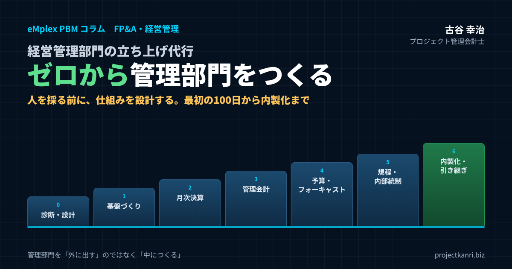

経営管理部門の立ち上げ代行サービスとは？ゼロから管理部門をつくる方法―経理・財務・経営企画・管理会計の立ち上げステップ、最初の100日、人員計画、システム選定、内製化までの進め方

結論：管理部門は「人を採る」前に「仕組みを設計する」
この記事のポイント
- 経営管理部門の本当の価値は、記録だけでなく経営の参謀の機能
- 管理部門は人を採る前に仕組みを設計する
- 立ち上げ代行は、管理部門を「外に出す」のではなく「中につくる」サービス
- 診断→基盤→月次決算→管理会計→予算・フォーキャスト→規程・内部統制→内製化の順で積み上げる
- 最初の100日で、新しい仕組みの月次の数字を経営会議で報告できる状態に
プロジェクト管理会計士の古谷です。創業から数年が経ち、社員が20人、30人と増えてきた会社の経営者から、「そろそろ管理部門をちゃんとつくりたいが、何から始めればよいのか分からない」というご相談を、よくいただきます。
多くの経営者が最初に考えるのは、経理の経験者を一人採用することです。もちろん、それは大切な一歩です。しかし、経験者を一人採用しただけで、管理部門ができあがるわけではありません。何を、いつまでに、どの精度で締めるのか。どの数字を、誰に、どのタイミングで報告するのか。どのシステムで、どのようにデータをつなぐのか。こうした仕組みの設計がないまま人を採用すると、採用された人は前任者のいない環境で手探りを続け、結局は日々の処理に追われて、経営に役立つ数字を出せないまま疲弊してしまいます。
管理部門をゼロからつくるときに大切なのは、人を採る前に仕組みを設計し、仕組みを動かしながら人を育て、最終的には自社の力で回せる状態にすることです。この「設計」「運用」「内製化」の三つを、限られた時間の中で進めるために、外部の専門家が立ち上げを代行し、伴走するという選択肢があります。それが、経営管理部門の立ち上げ代行サービスです。
本記事では、経営管理部門とは何か、いつ必要になるのか、ゼロからつくるにはどのような順番で進めればよいのかを、私自身がCFOや経営企画の責任者として管理の体制をつくってきた経験と、200社を超える企業の経営管理のご支援の経験をもとに、できるだけ具体的にお伝えします。
経営管理部門とは？担う機能と役割
経営管理部門とは、会社の経営を、数字と仕組みの面から支える部門の総称です。会社によって呼び方はさまざまで、管理部、管理本部、経営管理部、コーポレート部門などと呼ばれます。担う機能は、大きく次のように整理できます。
| 機能 | 主な業務 |
|---|---|
| 経理 | 日々の取引の記録、請求・支払い、月次・年次の決算、税務申告の準備 |
| 財務 | 資金繰り、金融機関との取引、資金調達、与信管理 |
| 管理会計・経営企画 | 事業別・プロジェクト別の採算、予算とフォーキャスト、経営会議の資料 |
| 人事・労務 | 給与計算、勤怠管理、社会保険、採用・評価の制度 |
| 総務・法務 | 契約の管理、規程の整備、株主総会・取締役会の運営 |
| 情報システム | 業務システムの選定・運用、アクセス権限の管理 |
小さな会社では、これらの機能を、一人か二人の社員が兼務していることがほとんどです。あるいは、経理は税理士の事務所に、給与の計算は社会保険労務士の事務所に、それぞれ外部に任せていて、社内には担当者がいないという会社も少なくありません。
ここで強調しておきたいのは、経営管理部門の役割は、取引を記録して決算をまとめる「記録の機能」だけではないということです。記録した数字をもとに、事業やプロジェクトごとの採算を明らかにし、予算と実績を比べ、将来の着地を見通して、経営者の判断を支える「経営の参謀の機能」こそが、経営管理部門の本当の価値です。記録の機能は外部に任せることもできますが、経営の参謀の機能は、会社の中に持たなければ、経営のスピードについていけません。
記録の機能と経営の参謀の機能は、どちらか一方だけでは成り立ちません。記録が正確でなければ、参謀の機能が示す数字は信頼されません。逆に、記録だけが正確でも、それが経営の判断に使われなければ、管理部門の価値は半分しか発揮されません。管理部門の立ち上げでは、記録の機能を固めながら、早い段階から参謀の機能の芽を育てていくことが大切です。
経営管理部門が必要になるタイミング：10のサイン
では、経営管理部門は、いつ必要になるのでしょうか。会社の規模や業種によって異なりますが、次のようなサインが出てきたら、管理部門の立ち上げを本格的に検討するタイミングだと考えてください。
| □ | サイン |
|---|---|
| □ | 社長が請求書の作成や支払いの手続きを自分で行っている |
| □ | 月次の試算表が届くのが翌々月以降になっている |
| □ | 事業別・プロジェクト別の採算が分からない |
| □ | 資金繰りの見通しを数か月先まで示せない |
| □ | 請求の漏れや支払いの遅れが起きている |
| □ | 経理・給与が特定の一人にしか分からない |
| □ | 社員が20〜30人を超え、経費・勤怠の管理が回らない |
| □ | 金融機関や投資家から、数字の説明を求められることが増えた |
| □ | 上場や大きな資金調達を検討し始めた |
| □ | 経営会議が、過去の数字の報告だけで終わっている |
とくに注意したいのは、社長が経理や請求の作業を自分で抱えている状態です。創業期には、社長がすべてを見ていることが強みになります。しかし、会社が成長するにつれて、社長の時間は、営業、採用、事業の判断といった、社長にしかできない仕事に使うべきものになります。社長が請求書の作成や支払いの手続きに時間を取られているのは、会社にとって最も高くつく時間の使い方なのです。
もう一つのサインは、月次の数字が遅いことです。税理士の事務所から月次の試算表が届くのが翌々月になっている、あるいは決算のときにしか数字が分からない。こうした状態では、経営の判断はすべて、過去の、しかも古い数字にもとづくことになります。事業が伸びている時期ほど、数字の遅れは、判断の誤りや資金の不足といった形で、会社に大きな影響を与えます。
これらのサインのうち、三つ以上に当てはまるのであれば、管理部門の立ち上げを、経営の優先課題として位置づけることをおすすめします。サインが出てから動き始めても、仕組みが整うまでには時間がかかります。事業の成長のスピードに管理が追いつかなくなる前に、手を打つことが大切です。
管理部門をゼロからつくるのが難しい5つの理由
管理部門の必要性を感じていても、実際に立ち上げるのは簡単ではありません。私が見てきた中で、多くの会社がつまずく理由は、次の五つです。
| 理由 | 起きること |
|---|---|
| 採用が難しい | 経理・管理会計・経営企画を担える人材が見つからない |
| 何から始めるか分からない | 優先順位と順番の判断に立ち上げの経験が必要 |
| 一人に依存する | 採用した人の頭の中だけで業務が回り、退職で振り出しに |
| 経営者との期待のずれ | 経営者は経営の数字を期待、担当者は処理と決算で手一杯 |
| 現場の協力が得られない | 請求情報・経費・工数が期限どおりに届かない |
一つ目は、採用の難しさです。経理や財務の経験者、とくに管理会計や経営企画まで担える人材は、どの会社でも不足しています。採用の市場で競争が激しく、条件の面で大企業と競うのは容易ではありません。
二つ目は、何から手をつけるべきかが分からないことです。経理の処理、月次の決算、給与と労務、契約の管理、規程の整備、システムの導入、予算の策定。やるべきことは山ほどありますが、その優先順位と順番を判断するには、管理部門を立ち上げた経験が必要です。
三つ目は、一人に依存してしまうことです。ようやく採用した経験者に、すべてを任せてしまうと、その人の頭の中にしかないやり方で業務が回るようになります。その人が退職すれば、また振り出しに戻ります。
四つ目は、経営者と管理部門の期待のずれです。経営者は、経営に役立つ数字を期待しています。しかし、管理部門の担当者は、日々の処理と決算に追われ、その期待に応える余裕がありません。この期待のずれが、互いの不満につながります。
五つ目は、現場の協力が得られないことです。管理部門の仕事は、営業や現場から正しい情報が、期限どおりに届いてはじめて成り立ちます。請求の情報、経費の精算、工数の入力。現場にとっては面倒な作業であり、管理部門が新しいルールをつくっても、なかなか守られません。
これらの五つの理由は、互いに関係しています。何から始めるべきかが分からないまま採用を急ぎ、採用した一人にすべてを任せ、経営者の期待とのずれが生まれ、現場の協力も得られないまま、担当者が疲弊して退職する。この悪循環を断ち切るためには、最初に全体の設計を行い、優先順位を明確にすることが欠かせません。
経営管理部門の立ち上げ代行サービスとは
経営管理部門の立ち上げ代行サービスとは、管理部門の経験を持つ外部の専門家が、一定の期間、会社の管理部門の責任者や担当者の役割を担いながら、管理部門の仕組みを設計し、運用を立ち上げ、最終的には社内の人材に引き継いでいくサービスです。
よく似たサービスに、経理代行（記帳代行や経理BPO）があります。経理代行は、日々の経理の処理や月次の決算の作業を、外部が継続して引き受けるサービスです。一方、立ち上げ代行は、作業を引き受けることそのものよりも、仕組みをつくり、社内で回せるようにすることを目的とします。
| 立ち上げ代行 | 経理代行（BPO） | |
|---|---|---|
| 目的 | 管理部門の仕組みを社内につくる | 経理の作業を外部が継続して引き受ける |
| 主な範囲 | 診断・設計、運用の立ち上げ、採用・育成支援、文書化と引き継ぎ | 記帳、請求・支払いの処理、月次決算の作業 |
| 期間 | 立ち上げの期間（内製化がゴール） | 継続 |
| 社内に残るもの | 仕組み・手順書・育った人材 | 社内には残りにくい |
| 経営の参謀の機能 | 立ち上げ期間は担い、社内に移す | 通常は範囲外 |
立ち上げ代行の役割は、大きく四つに整理できます。一つ目は、現状の診断と、管理部門の全体の設計です。二つ目は、月次決算、管理会計、予算といった仕組みを、実際に動かしながら立ち上げることです。三つ目は、採用の要件の定義や、採用した人材の育成の支援です。四つ目は、業務の手順やルールを文書にし、社内の人材に引き継いで、外部の支援がなくても回る状態にすることです。
つまり、立ち上げ代行は、管理部門を「外に出す」サービスではなく、管理部門を「中につくる」ためのサービスです。外部の専門家の経験を借りて、立ち上げの期間を短くし、遠回りや失敗を減らす。そして、最後は自社の力で走れるようにする。これが、立ち上げ代行の本質です。
立ち上げ代行の専門家は、一時的に社内の一員として動きます。社内の会議に参加し、現場の担当者と直接やりとりし、経営者と日常的に議論します。外から助言をするだけの関わりとは異なり、実際に手を動かしながら、社内の事情に合わせて仕組みを調整していけることが、立ち上げ代行の強みです。
自社採用・立ち上げ代行・経理代行・顧問の比較
管理部門をつくる方法は、立ち上げ代行だけではありません。会社の状況に応じて、いくつかの方法を組み合わせることになります。主な方法の特徴を比べてみます。
| 方法 | 強み | 弱み・注意点 |
|---|---|---|
| 自社で採用 | 知識・仕組みが社内に残る | 採用に時間、立ち上げ経験があるとは限らない、一人依存 |
| 立ち上げ代行 | 設計から運用まで短期間で立ち上げ、内製化まで伴走 | 期間限定。内製化の計画と社内の受け皿が必要 |
| 経理代行（BPO） | 日々の処理の負担を減らせる | 社内に仕組み・知識が残りにくい。参謀機能は担えない |
| 顧問・社外CFO | 経営判断への助言 | 月数回の関与では業務の仕組みを動かしにくい |
自社での採用は、最終的には欠かせない方法ですが、採用までに時間がかかり、採用した人材が立ち上げの経験を持っているとは限りません。経理代行は、日々の処理の負担を減らすには有効ですが、会社の中に知識や仕組みが残りにくく、経営の参謀の機能までは担えません。顧問や社外のCFOは、経営の判断への助言には力を発揮しますが、月に数回の関わりでは、実際の業務の仕組みを動かすところまでは手が回らないことが多いでしょう。
立ち上げ代行は、これらの間を埋める方法です。設計から運用まで、実際の業務に入り込んで仕組みを動かしながら、並行して採用と育成を進め、最終的には社内の人材と、必要に応じて経理代行や顧問を組み合わせた体制に引き継いでいきます。
どの方法が最適かは、会社の規模、成長の速さ、上場の予定の有無、社内の人材の状況によって変わります。大切なのは、一つの方法に頼り切るのではなく、時期に応じて組み合わせを変えていくことです。立ち上げの時期は外部の力を大きく借り、運用が安定するにつれて社内の比重を高めていく。この移行の計画を、最初から描いておくことをおすすめします。
税理士・社会保険労務士など外部専門家との役割分担
管理部門を立ち上げるとき、多くの会社には、すでに顧問の税理士や社会保険労務士がいます。立ち上げにあたっては、こうした外部の専門家との役割の分担を、改めて整理しておくことが大切です。
| 専門家 | 立ち上げ前 | 立ち上げ後 |
|---|---|---|
| 税理士 | 記帳・試算表の作成・決算・申告 | 税務相談、決算・申告の確認 |
| 社会保険労務士 | 給与計算・社会保険の手続き | 労務相談、制度設計、手続きの一部（勤怠と工数の整合を共同設計） |
| 立ち上げ代行 | — | 設計・運用の立ち上げ、引き継ぎ後は相談窓口 |
たとえば、これまで税理士の事務所に記帳から月次の試算表の作成までを任せていた場合、社内で月次決算を締めるようになれば、税理士の事務所の役割は、記帳から、税務の相談や決算・申告の確認へと移っていきます。給与の計算を社会保険労務士の事務所に任せている場合も、勤怠のデータの締め方や、プロジェクトの工数との整合をどう取るのかを、一緒に設計し直す必要があります。
役割の分担を見直すときは、外部の専門家にも、立ち上げの計画を共有し、協力をお願いすることが大切です。データの受け渡しの方法や時期が変わることで、外部の専門家の作業にも影響が出るからです。社内と外部が同じ計画を見ながら進めることで、移行の時期の混乱を防ぐことができます。
ゼロから管理部門をつくる7つのフェーズ（フェーズ0〜6）
それでは、ゼロから経営管理部門をつくるには、どのような順番で進めればよいのでしょうか。私は、次のフェーズ0からフェーズ6までの七つのフェーズで考えることをおすすめしています。
| フェーズ | 内容 | ゴール |
|---|---|---|
| 0 現状診断・全体設計 | 業務の棚卸し、課題とリスクの整理、1年後・3年後の姿 | 経営者と合意した立ち上げ計画 |
| 1 基盤づくり | 勘定科目・コード体系、請求・支払いの流れ、システム | 取引を正しく漏れなく記録 |
| 2 月次決算の確立 | 締めの手順書・チェックリスト、現場への依頼期限 | 毎月同じ品質で締まる |
| 3 管理会計 | 事業別・プロジェクト別の採算、工数と労務費 | 採算が見える |
| 4 予算・フォーキャスト | 予算策定、予実比較、着地見通し、経営会議資料 | 経営会議が未来の判断の場に |
| 5 規程・権限・内部統制 | 職務権限、ワークフロー、規程 | ルールに沿って業務が回る |
| 6 内製化・引き継ぎ | 手順書と判断基準の文書化、段階的な引き継ぎ | 社内の人材で回る |
このフェーズの順番には、理由があります。月次決算が締まらなければ、管理会計の数字は信頼できません。管理会計の数字がなければ、予算もフォーキャストも根拠を持てません。規程や内部統制は、業務の流れが固まってから整えるほうが、実態に合ったものになります。そして、内製化は、仕組みが一通り動いてからでなければ、引き継ぐものがありません。土台から順に積み上げていくことが、遠回りに見えて、実は最も早い道なのです。
ただし、フェーズは厳密に一つずつ終わらせる必要はありません。採用の活動は早い段階から始めるべきですし、規程の中でも、職務の権限や経費の精算のルールのように、早めに決めておかなければ業務が回らないものもあります。全体の順番を意識しながら、必要なものは前倒しで進める。その判断が、立ち上げの経験が生きるところです。
以下、それぞれのフェーズで何をするのかを、詳しく見ていきます。
フェーズ0：現状診断と全体設計
最初のフェーズは、現状の診断です。今、会社の管理の業務が、誰によって、どのように行われているのかを洗い出します。
| 領域 | 確認すること |
|---|---|
| 業務 | 誰が、何を、いつ、どの方法で行っているか |
| 数字 | 月次の数字がいつ、どの精度で出ているか |
| リスク | 請求漏れ・支払い遅れ・一人依存・承認のない支出 |
| システム | 使っているシステムとデータのつながり、手作業の転記 |
| 外部 | 税理士・社労士などとの役割分担 |
| 経営者の期待 | 見たい数字、時期、採算の単位、上場の予定 |
診断で大切なのは、業務の一覧をつくるだけでなく、その業務がどこで止まっているのか、どこにリスクがあるのかを見つけることです。請求書の発行が営業の担当者の手作業に頼っていて、発行の漏れが起きている。経費の精算に承認の手続きがなく、社長がまとめて目を通している。給与の計算が一人の担当者の頭の中にしかない。こうした問題を、優先度とともに整理します。
診断の結果をもとに、管理部門の全体の設計を行います。どの機能を社内に持ち、どの機能を外部に任せるのか。どのような人員の構成で、いつまでに何を実現するのか。どのシステムを使い、データをどのようにつなぐのか。経営者と一緒に、1年後、3年後の管理部門の姿を描き、そこに至るまでの計画を立てます。
この段階で、経営者が管理部門に何を期待しているのかを、言葉にしておくことも大切です。毎月何日までに、どのような数字を見たいのか。どの単位の採算を知りたいのか。上場を目指すのか。期待が明確であれば、設計の優先順位も明確になります。
診断の期間は、長くても一か月程度にとどめることをおすすめします。診断に時間をかけすぎると、その間に現場の問題は放置され、立ち上げの勢いも失われます。完璧な診断を目指すよりも、主要な課題をつかんだら設計に移り、動かしながら見えてきた課題は、計画に随時反映していくほうが、結果として早く管理部門が形になります。
フェーズ1：基盤づくり（経理の基本業務とシステム）
二つ目のフェーズは、経理の基本の業務と、システムの基盤づくりです。日々の取引を、正しく、漏れなく記録する仕組みを整えます。
| □ | 項目 |
|---|---|
| □ | 勘定科目と、事業・部門・プロジェクトのコード体系を設計した |
| □ | 請求書の発行の手順と責任者を決めた |
| □ | 発注・検収・支払いの承認の流れを決めた |
| □ | 経費精算のルールと承認の手順を決めた |
| □ | インボイス制度・電子帳簿保存法に沿った書類の受け取りと保存の方法を決めた |
| □ | 会計・給与勤怠・経費・請求・プロジェクト管理のシステムとデータ連携を設計した |
| □ | 銀行口座・入出金の管理方法を整理した |
このフェーズで最も大切なのは、勘定科目と、部門やプロジェクトのコードの体系を、最初に設計することです。後から管理会計で、事業別やプロジェクト別の数字を見たいのであれば、日々の取引を記録する時点で、事業やプロジェクトのコードを付けておく必要があります。コードの体系を後から変えるのは、大変な手間がかかります。最初の設計が、その後の管理会計の質を決めると言っても過言ではありません。
請求と支払いの流れも、このフェーズで整えます。誰が、何をもとに請求書を発行するのか。発注から検収、支払いまでを、誰が承認するのか。インボイス制度や電子帳簿保存法への対応も含めて、書類の受け取りと保存の方法を決めておきます。
システムについては、会計、給与と勤怠、経費の精算、請求と販売の管理、プロジェクトの管理など、必要なシステムを選び、データのつながりを設計します。システムの選び方については、後ほど詳しく述べます。
コードの体系を設計するときは、将来の事業の広がりも考えておきましょう。今は一つの事業しかなくても、数年後に新しい事業を始めるかもしれません。部門の構成が変わるかもしれません。コードに余裕を持たせ、事業、部門、プロジェクトのそれぞれの階層を分けて設計しておけば、組織の変化にも対応しやすくなります。
フェーズ2：月次決算の確立
三つ目のフェーズは、月次決算の確立です。毎月、決まった日までに、正しい数字を締める仕組みをつくります。
| ポイント | 内容 |
|---|---|
| 目標日程 | 翌月15営業日程度から始め、10営業日→5営業日へ |
| 手順書 | 誰が、いつまでに、何をするか、計上の根拠 |
| チェックリスト | 残高の確認、未計上の確認、前月比の異常値 |
| 現場への依頼 | 請求情報・経費・外注請求・工数の提出期限を全社に周知 |
| 振り返り | 毎月つまずいた点を記録し、手順を改善 |
月次決算の目標は、最初は翌月の15営業日程度から始め、運用が安定するにつれて10営業日、さらに5営業日へと短くしていくのが現実的です。いきなり短い目標を掲げると、数字の正確さが犠牲になります。まずは、毎月同じ手順で、同じ品質の数字を締められるようになることが先決です。
月次決算を早く正確に締めるためには、締めの作業の手順書と、チェックのリストを作ることが欠かせません。誰が、いつまでに、何をするのか。売上や原価の計上の根拠は何か。残高の確認はどのように行うのか。手順書があれば、担当者が替わっても、同じ品質で決算を締めることができます。
営業や現場の協力も欠かせません。請求の情報、経費の精算、外注先からの請求書、プロジェクトの工数。これらが締めの日までに管理部門に届かなければ、月次決算は締まりません。現場への依頼の期限と方法を決め、経営者の名前で全社に周知することが、協力を得るための近道です。月次決算を早めるための仕組みについては、別のコラム「月次決算を5営業日で締める10の仕組み」や「仮締めと本締めとは？」でも詳しく解説しています。
資金繰り管理の立ち上げ：月次決算と並ぶ最優先事項
管理部門の立ち上げで、月次決算と並んで早く手をつけるべきなのが、資金繰りの管理です。会社は、赤字でもすぐには倒れませんが、資金が尽きれば倒れます。私自身、新卒で入った会社で和議を経験したからこそ、このことを強く実感しています。
| 項目 | 内容 |
|---|---|
| 資金繰り表 | 今後3〜6か月の入金・出金の予定を一覧化 |
| 入金の予定 | 請求と回収の条件、プロジェクトの検収時期から組み立て |
| 出金の予定 | 外注費・給与・税金・社会保険・借入返済 |
| 更新の頻度 | 週次または月次で実績と見通しを更新 |
| 受注判断との連動 | 大型案件の受注前に資金の見通しを確認 |
資金繰りの管理の基本は、今後数か月の入金と出金の予定を一覧にした資金繰り表をつくり、毎週か毎月、実績と見通しを更新することです。入金の予定は請求と回収の条件から、出金の予定は支払いの条件や給与、税金、借入の返済から組み立てます。
プロジェクト型ビジネスでは、プロジェクトの着手から入金までの間に、外注費や人件費の支払いが先行することが多く、売上が伸びている時期ほど資金が不足しやすいという特徴があります。大型のプロジェクトを受注したときに、資金の見通しがどう変わるのか。受注の判断の前に資金繰りを確認できる状態にしておくことが、成長期の会社には欠かせません。
フェーズ3：管理会計の仕組みづくり（事業別・プロジェクト別の採算）
四つ目のフェーズは、管理会計の仕組みづくりです。会社全体の数字だけでなく、事業別、部門別、プロジェクト別、顧客別の採算を見えるようにします。ここからが、経営の参謀としての管理部門の本領です。
| 項目 | 内容 |
|---|---|
| 採算の単位 | 事業別・部門別・プロジェクト別・顧客別のうち、最重要の単位から |
| 原価の集計 | 外注費・経費をコードでひもづけ、工数×時間単価で労務費を配分 |
| 共通費 | 配賦の基準を決めて継続適用 |
| 財務会計との整合 | 管理会計の合計と月次決算の一致を毎月確認 |
管理会計の仕組みづくりでは、まず、経営者がどの単位の採算を知りたいのかを確認します。事業ごとの採算なのか、プロジェクトごとの採算なのか、顧客ごとの採算なのか。すべてを一度に見えるようにしようとすると、仕組みが複雑になり、立ち上げに時間がかかります。最も重要な単位から始めることが大切です。
プロジェクト型ビジネスの会社であれば、多くの場合、最も重要なのはプロジェクト別の採算です。プロジェクトごとに売上と原価を集計し、粗利を把握する。そのためには、外注費や経費をプロジェクトのコードとひもづけるだけでなく、社員の工数をプロジェクト別に記録し、労務費を原価として配分する仕組みが必要になります。
管理会計の数字は、財務会計の数字と一致していなければ信頼されません。プロジェクト別の採算を合計した数字が、月次の決算の数字と一致していること。この整合を毎月確認する手順を、月次決算の手順の中に組み込んでおきましょう。
管理会計の数字をつくるときは、最初から細かすぎる粒度を求めないことも大切です。プロジェクト別の採算を、最初は外注費と経費だけで集計し、工数の記録が定着してから労務費を加える。共通費の配賦は、まず粗利までを見えるようにしてから検討する。段階を踏むことで、現場の負担を抑えながら、管理会計の仕組みを定着させることができます。
フェーズ4：予算とフォーキャスト（経営会議の数字づくり）
五つ目のフェーズは、予算とフォーキャストの仕組みづくりです。過去の実績を報告するだけでなく、将来の着地を見通し、経営の判断に生かす仕組みをつくります。
| 項目 | 内容 |
|---|---|
| 予算 | 全社目標を事業別・部門別・受注見込みの単位まで分解 |
| 予実比較 | 毎月、予算と実績の差異と原因を分析 |
| フォーキャスト | 年度の着地見通しを毎月更新し、目標との差を埋める打ち手を示す |
| 経営会議資料 | 毎月同じ型・同じ順番で、数枚に絞る |
予算は、会社全体の目標を、事業別、部門別、そして必要に応じてプロジェクトや受注の見込みの単位まで分解してつくります。予算ができたら、毎月、予算と実績を比べ、差異の原因を分析します。そして、差異の分析だけで終わらせず、年度の着地の見通しを毎月更新することが大切です。
私が「フォーキャスト経営」と呼んでいるこの考え方は、管理部門が経営の参謀になるための核心です。月次の経営会議で、管理部門が、先月の実績だけでなく、このままいけば年度の着地はどうなるのか、目標との差を埋めるために何が必要なのかを示す。そうなってはじめて、経営会議は、過去の報告の場から、未来の判断の場に変わります。
経営会議の資料の型も、このフェーズで決めておきましょう。毎月同じ型で、同じ順番で数字を示すことで、経営陣は数字の変化に気づきやすくなります。予算のつくり方については、別のコラム「プロジェクト型ビジネスのための予算作成の極意」で詳しく解説しています。
予算をつくる過程そのものも、管理部門の立ち上げにとって大きな意味があります。予算をつくるには、事業の責任者や部門の責任者と、来期の売上の見込み、人員の計画、費用の計画を話し合う必要があります。この対話を通じて、管理部門は事業の中身を深く理解し、事業の責任者は数字で考える習慣を身につけていきます。予算の策定は、管理部門と事業の部門をつなぐ、最初の共同作業なのです。
フェーズ5：規程・権限・内部統制の整備
六つ目のフェーズは、規程、職務の権限、内部統制の整備です。会社の運営のルールを文書にし、それに沿って業務が行われる状態をつくります。
| 項目 | 内容 |
|---|---|
| 職務権限 | 受注・発注・支払い・採用・契約の決裁権限と金額 |
| ワークフロー | 承認をシステムで行い、記録を残す |
| 規程 | 経理・予算管理・職務権限・就業など、実態に合わせて整備 |
| 内部統制 | 権限の分離、承認の証跡、アクセス権限の管理 |
規程の整備では、他社のひな形をそのまま使うのではなく、フェーズ1からフェーズ4で固まった、自社の実際の業務の流れに合わせることが大切です。業務の流れが固まる前に規程を作ると、規程と実態がずれてしまいます。
とくに早めに決めておきたいのが、職務の権限です。誰が、どの金額まで、何を決められるのか。受注、発注、支払い、採用、契約。権限が明確になっていないと、すべての判断が社長に集中し、社長が不在のときに業務が止まります。逆に、権限が明確になっていれば、社長は判断を任せることができ、会社のスピードが上がります。
承認の手続きを、紙やメールではなく、ワークフローのシステムで行うようにすると、承認の記録が自動的に残り、内部統制の面でも有効です。上場を目指す会社であれば、このフェーズが、上場の準備の内部統制の整備の土台にもなります。
規程の数は、会社の段階に合わせて増やしていけば十分です。最初から上場企業と同じ数の規程を揃える必要はありません。まずは、職務権限、経理、経費精算、就業といった、日々の業務に直結する規程から整え、会社の成長や上場の準備の進み具合に応じて、内部者取引の防止や適時開示といった規程を加えていきます。規程は、つくることよりも、守られることのほうがはるかに大切です。
フェーズ6：内製化と引き継ぎ
最後のフェーズは、内製化と引き継ぎです。外部の支援がなくても、社内の人材で管理部門を回せる状態をつくります。立ち上げ代行サービスにとって、このフェーズこそがゴールです。
| 段階 | 外部の専門家 | 社内の担当者 |
|---|---|---|
| 1 見て学ぶ | 業務を行う | 横で学ぶ |
| 2 やってみる | 確認・助言する | 業務を行う |
| 3 任せる | 相談窓口として残る | 単独で業務を行う |
引き継ぎで最も大切なのは、業務の手順書と、判断の基準を文書にしておくことです。手順書には、作業の手順だけでなく、なぜその手順なのか、例外が起きたときにどう判断するのかも書いておきます。手順だけを引き継いでも、例外の判断ができなければ、業務は止まってしまいます。
引き継ぎは、一度に行うのではなく、段階的に進めます。最初は外部の専門家が業務を行い、社内の担当者が横で学ぶ。次に、社内の担当者が業務を行い、外部の専門家が確認する。最後に、社内の担当者が単独で業務を行い、外部の専門家は相談の窓口として残る。この三つの段階を、業務ごとに進めていきます。
内製化の後も、外部の専門家との関係を完全に切る必要はありません。月に一度、経営会議の資料を確認してもらう、年に一度、決算や予算の策定を支援してもらうなど、必要な部分だけ関わりを残しておくと、社内の人材の成長を支えながら、品質を保つことができます。
引き継ぎの完了の判断も、あらかじめ基準を決めておきます。たとえば、社内の担当者が単独で三か月連続して、目標の日程で月次決算を締め、経営会議の資料を作成できたら、その業務の引き継ぎは完了とする、といった基準です。基準があれば、外部の支援を終える時期を、経営者と専門家が同じ認識で判断できます。
業務手順書のつくり方：引き継げる管理部門の条件
内製化の成否を分けるのは、業務の手順書の質です。手順書があれば、担当者が替わっても、休んでも、業務は止まりません。逆に、手順書がなければ、どれほど優れた仕組みも、特定の人の記憶の中にしか残りません。
| 項目 | 内容 |
|---|---|
| 目的 | その業務が何のためにあるか |
| 手順 | 画面操作・資料・チェックの順番 |
| 期限と担当 | いつまでに、誰が行うか |
| 判断の基準 | 例外が起きたときの判断の考え方 |
| 関係者 | 情報をもらう相手、渡す相手、外部専門家 |
| 改訂履歴 | 改訂の日付と内容 |
手順書は、最初から完璧なものをつくろうとしないことが大切です。まずは、実際に業務を行いながら、画面の操作や判断の手順を、そのまま書き留めていく。月次決算であれば、一回締めるたびに、つまずいたところや、迷った判断を書き足していく。こうして、使いながら育てていく手順書のほうが、机の上でつくった手順書よりも、はるかに役に立ちます。
手順書の置き場所も決めておきましょう。共有のフォルダや社内のウィキなど、誰もが最新の版を見られる場所に置き、改訂したら日付と内容を記録します。手順書が複数の場所に散らばっていたり、古い版が残っていたりすると、かえって混乱のもとになります。
最初の100日でやること
立ち上げの最初の100日は、その後の管理部門の方向を決める大切な期間です。私がご支援で目安にしている、最初の100日の進め方を示します。
| 期間 | 取り組み | 到達点 |
|---|---|---|
| 1〜30日 | 現状診断、緊急課題への対処、全体設計の合意 | 立ち上げ計画の合意 |
| 31〜60日 | コード体系・請求支払いの流れ・システム導入、採用活動の開始 | 新しい基盤の稼働 |
| 61〜100日 | 新しい仕組みで月次決算を締め、つまずきを直して再度締める | 新しい月次の数字を経営会議で報告 |
最初の30日は、診断と、緊急度の高い課題への対処に使います。請求の漏れ、支払いの遅れ、給与の計算の誤りといった、放置すると会社の信用や資金に影響する問題があれば、まずそれを止めます。そのうえで、全体の設計を経営者と合意します。
31日から60日は、基盤づくりです。勘定科目とコードの体系を整え、請求と支払いの流れを決め、必要なシステムの導入を始めます。採用の活動も、この時期には始めておきたいところです。
61日から100日は、月次決算を新しい仕組みで一度締めてみる期間です。最初の月次決算は、必ずどこかでつまずきます。つまずいたところを記録し、手順を直し、翌月にもう一度締める。この繰り返しで、月次決算の仕組みが固まっていきます。100日の時点で、新しい仕組みで締めた月次の数字を、経営会議で報告できていれば、立ち上げは順調に進んでいると言えます。
100日の計画は、経営者と立ち上げの担当者が、毎週短い時間でも進捗を確認しながら進めることをおすすめします。立ち上げの初期には、想定していなかった問題が次々に見つかります。過去の取引の記録の誤り、契約書の不備、システムの設定の問題。こうした問題が見つかったときに、その場で優先順位を判断し、計画を柔軟に組み替えられることが、100日を有効に使うための鍵です。
段階別の人員計画：何人で、どんな役割を置くか
管理部門の人員は、会社の規模や業種によって大きく異なりますが、目安となる段階別の考え方を示します。
| 段階 | 社内の人員の例 | 外部の活用の例 |
|---|---|---|
| 創業〜社員20人程度 | 経理の実務担当1人（兼務も） | 税理士・社労士、立ち上げ代行で設計 |
| 社員20〜50人程度 | 経理実務1〜2人、管理会計・経営企画1人 | 立ち上げ代行から内製化へ移行、顧問 |
| 社員50人超・上場準備 | 管理部門責任者（CFO・管理本部長）、経理・財務・経営企画・人事労務・法務 | 監査法人、主幹事証券、専門家 |
業種や事業の複雑さによって大きく異なります。
最初の一人は、経理の実務ができる人材です。日々の処理と月次決算を担い、外部の専門家や税理士と連携します。次に必要になるのは、管理会計と経営企画を担える人材です。事業別やプロジェクト別の採算、予算とフォーキャスト、経営会議の資料づくりを担います。この役割は、経理の実務の担当者とは求められる力が異なるため、別の人材として考えたほうがよいでしょう。
会社がさらに大きくなり、上場を目指す段階になると、管理部門の責任者、つまりCFOや管理本部長の役割が必要になります。開示、内部統制、資本政策、金融機関や投資家との関係など、経営の中枢に関わる仕事を担います。
人員計画で大切なのは、採用の順番と、外部の力を借りる部分を組み合わせて考えることです。たとえば、最初は経理の実務の担当者を一人採用し、管理会計と経営企画の機能は立ち上げ代行の専門家が担う。その間に、管理会計を担える人材を採用し、育てる。こうした計画を立てておけば、採用が遅れても、管理部門の機能が止まることはありません。採用の要件をつくるときは、求める経験と、入社後に担う役割を具体的に書くことで、ミスマッチを減らすことができます。
社員10人前後の会社の「最小構成」の管理部門
社員が10人前後の会社では、専任の管理部門の担当者を置くのは難しいかもしれません。それでも、最小限の仕組みを整えておくことで、会社の成長に備えることができます。
私がおすすめしている最小構成は、次のようなものです。日々の経理の処理は、クラウドの会計のソフトと、銀行やカードのデータの自動の取り込みを使い、社内の兼務の担当者が行う。月次の決算と税務は、税理士の事務所と連携する。給与の計算は、社会保険労務士の事務所に任せる。そして、月に一度、社長と担当者で、月次の数字と資金繰りの見通しを確認する時間を必ず取る。
この段階で大切なのは、将来の拡張を見据えて、勘定科目と、事業やプロジェクトのコードの体系だけは、最初からきちんと設計しておくことです。社員が少ないうちは手作業でも回りますが、コードの体系がなければ、会社が大きくなったときに、過去の数字を分析することができません。最小構成であっても、管理会計の土台だけはつくっておく。それが、後の立ち上げを大きく楽にします。
採用の要件定義と、面接で確認すること
管理部門の人材の採用で失敗しないためには、採用の要件を具体的に定義することが大切です。「経理の経験者」とだけ書いた求人では、記帳の経験しかない人も、上場企業の連結決算の経験がある人も、同じように応募してきます。
| 役割 | 求める経験の例 | 面接で確認すること |
|---|---|---|
| 経理実務 | 月次決算・年次決算の実務、請求・支払いの処理 | 締めの日数、担当範囲、ミスを防ぐ工夫 |
| 管理会計・経営企画 | 事業別・プロジェクト別の採算管理、予算策定、経営会議資料の作成 | 数字から課題を示し、経営者と議論した経験 |
| 管理部門責任者 | 管理部門の立ち上げ・運営、上場準備、資金調達 | 仕組みをゼロからつくった経験、組織づくり |
面接では、経験の年数や資格よりも、具体的にどのような業務を、どのような体制で担ってきたのかを聞くことをおすすめします。月次決算を何営業日で締めていたのか、その中で自分は何を担当していたのか。仕組みをゼロからつくった経験があるのか、既にある仕組みを運用していたのか。立ち上げの時期の管理部門で求められるのは、決められた業務を正確にこなす力に加えて、決まっていないことを自分で考えて決めていく力です。
立ち上げ代行の専門家が入っている場合は、面接に同席してもらったり、採用の要件の作成を手伝ってもらったりすることもできます。管理部門の実務を知る人が面接に加わることで、候補者の経験の中身を、より正確に見極めることができます。
システム選定とデータのつなぎ方
管理部門の立ち上げでは、システムの選定も重要なテーマです。ただし、システムの選定から始めるのは順番が逆です。まず業務の流れと、見たい数字を決め、それを実現するためのシステムを選びます。
| システム | 主なデータ | つなぐ先 |
|---|---|---|
| 会計 | 仕訳、試算表、決算 | 請求・経費・給与・プロジェクト管理 |
| 請求・販売管理 | 見積・受注・請求・入金 | 会計、プロジェクト管理 |
| 経費精算・ワークフロー | 経費、稟議、承認の記録 | 会計、プロジェクト管理 |
| 給与・勤怠 | 勤怠、給与、社会保険 | 会計、工数との整合 |
| プロジェクト管理・タイムシート | 予算、工数、原価、着地見通し | 会計、請求、勤怠 |
システムを選ぶときに最も大切なのは、システムどうしのデータのつながりです。請求のシステムで発行した請求書のデータが、会計のシステムに自動で連携されるか。勤怠のデータが、給与のシステムに連携されるか。プロジェクトの工数のデータが、プロジェクトの原価として集計されるか。データがつながっていなければ、システムを入れても、手作業の転記が残り、締めの作業は早くなりません。
もう一つ大切なのは、共通のコードです。取引先のコード、部門のコード、プロジェクトのコードが、すべてのシステムで共通になっていれば、データをつないで分析することができます。システムごとにコードがばらばらだと、後から突き合わせる作業が発生します。
小さな会社では、最初から大がかりなシステムを入れる必要はありません。クラウドの会計のソフトと、表計算のソフトの組み合わせから始めることもできます。ただし、その場合も、コードの体系とデータのつながりは、将来の拡張を見据えて設計しておくことが大切です。
システムの導入は、月次決算の締めの直前や、年次の決算の時期を避けて計画しましょう。新しいシステムへの移行の時期は、どうしても作業が増え、誤りも起きやすくなります。期首など、区切りのよい時期に合わせて移行し、移行の前後の月は、旧の仕組みと新しい仕組みの数字を突き合わせて確認する期間を設けておくと安心です。
プロジェクト型ビジネスの管理部門で特に押さえたいこと
建設、システム開発、コンサルティング、映像やイベントの制作といったプロジェクト型ビジネスの会社では、管理部門の立ち上げで、特に押さえておきたいポイントがあります。
| 論点 | ポイント |
|---|---|
| プロジェクトコード | 受注単位で発行、発行のタイミングと権限を決める |
| 工数の記録 | 日々の入力と承認、労務費を原価に配分 |
| 仕掛品・収益認識 | 期末の仕掛品の管理、売上計上の基準 |
| 予算と見通し | 受注時の予算、進行中の着地見通し、粗利率の悪化の早期把握 |
一つ目は、プロジェクトのコードの運用です。受注の単位でプロジェクトのコードを発行し、売上、外注費、経費、工数のすべてを、そのコードで記録します。コードを発行するタイミングと、発行の権限を決めておくことが大切です。
二つ目は、工数の記録です。社員の人件費は、プロジェクト型ビジネスの最大の原価です。社員が日々、どのプロジェクトに何時間を使ったのかを記録し、労務費を原価に配分しなければ、プロジェクトの本当の採算は分かりません。工数の記録は、現場にとって負担の大きい作業なので、目的を丁寧に説明し、入力の手間を減らす工夫が欠かせません。
三つ目は、仕掛品と収益の認識です。期末に完了していないプロジェクトの原価は、仕掛品として管理します。収益をいつ、どのように認識するのかという方針も、早めに決めておく必要があります。プロジェクトの検収の時期によって、月ごとの売上が大きく変動するため、売上の計上の基準を明確にしておくことが、月次の数字の信頼性を高めます。
四つ目は、プロジェクトの予算と見通しの管理です。受注の時点で予算を組み、進行中に着地の見通しを更新し、粗利率が悪化しているプロジェクトに早く気づく。この仕組みは、管理部門だけでなく、プロジェクトマネージャーと一緒に運用するものです。
プロジェクト型ビジネスでは、管理部門とプロジェクトマネージャーの関係づくりも欠かせません。プロジェクトの数字の多くは、プロジェクトマネージャーが入力し、確認するものだからです。管理部門が、プロジェクトマネージャーに数字の入力をお願いするだけでなく、採算の見方や、着地の見通しの立て方を一緒に考える。そうした関係ができれば、プロジェクトの数字の質は大きく上がり、管理部門は現場から頼られる存在になります。
経営会議と月次レポートの設計
管理部門が経営の参謀として機能しているかどうかは、経営会議を見れば分かります。管理部門の立ち上げでは、経営会議の運営と、月次レポートの設計まで含めて考えることが大切です。
| レポート | 内容 |
|---|---|
| 全社損益と予実 | 売上・粗利・営業利益の予算比、前年比 |
| 事業別・プロジェクト別の採算 | 粗利・粗利率、悪化している案件 |
| 着地見通し | 年度の着地予測と目標との差、打ち手 |
| 資金 | 現預金残高、資金繰りの見通し |
月次レポートは、数枚に絞ることをおすすめします。会社全体の損益と予算との比較、事業別やプロジェクト別の採算、年度の着地の見通し、資金の状況。この四つがあれば、経営会議で議論すべきことの多くはカバーできます。レポートが多すぎると、説明に時間がかかり、議論の時間がなくなります。
経営会議では、管理部門が数字を説明するだけでなく、数字から読み取れる課題と、判断が必要な事項を示すことが大切です。「粗利率が予算を下回ったプロジェクトが三件あり、うち一件は着地で赤字の見込みです。対策について、担当の事業部長から報告をお願いします」。このように、数字を、議論と判断につなげる進行を、管理部門が担います。
管理部門の年間カレンダー
管理部門の業務には、毎月の業務のほかに、年に一度、あるいは四半期に一度の業務があります。年間のカレンダーをつくり、いつ、何をするのかを見えるようにしておくと、繁忙の時期を見越して準備ができます。
| 時期 | 主な業務 |
|---|---|
| 毎月 | 請求・支払い、月次決算、資金繰りの更新、経営会議の資料 |
| 四半期ごと | 着地見通しの見直し、顧客別・事業別の採算のレビュー |
| 1〜3月 | 次年度の予算策定、人員計画 |
| 4〜6月 | 年次決算、税務申告、株主総会 |
| 7月 | 社会保険の算定基礎届などの年次手続き |
| 11〜12月 | 年末調整の準備・実施 |
決算期や会社の制度によって時期は異なります。
とくに、年次の決算と、次の年度の予算の策定の時期は、管理部門の業務が集中します。決算の作業と予算の策定が重なる会社も多いため、予算の策定のスケジュールは、決算の時期から逆算して、早めに始めることが大切です。
管理部門そのものの成果をどう測るか
管理部門は、売上を生む部門ではないため、その成果が見えにくいと言われます。しかし、管理部門の立ち上げが順調に進んでいるかどうかは、いくつかの指標で確かめることができます。
| 指標 | 見ること |
|---|---|
| 月次決算の日数 | 翌月何営業日で締まっているか |
| 数字の修正回数 | 締めた後に修正が発生した件数 |
| 請求の漏れ・遅れ | 発行漏れ・発行遅れの件数 |
| 経営会議での活用 | 着地見通しや採算をもとに判断した事項の数 |
| 社長の管理業務の時間 | 請求・支払いなどに社長が使う時間の減少 |
| 引き継ぎの進捗 | 社内で単独で回せる業務の割合 |
これらの指標を、立ち上げの計画の中で目標として設定し、経営者と定期的に確認することをおすすめします。月次決算の日数が短くなった、請求の漏れがなくなった、経営会議で着地の見通しを議論できるようになった。こうした変化を数字で示すことで、管理部門の価値が社内に伝わり、現場の協力も得やすくなります。
上場を目指す会社の管理部門の立ち上げ
将来、上場を目指す会社の場合、管理部門の立ち上げは、上場の準備の土台そのものになります。月次決算の早期化、管理会計と予算統制、規程と内部統制、労務管理。上場の準備で求められる仕組みの多くは、管理部門の立ち上げのフェーズと重なっています。
上場を目指す場合に注意したいのは、仕組みを整えるだけでなく、その仕組みが一定の期間、きちんと運用されている実績が求められることです。上場の準備の期間に入ってから管理部門をつくり始めると、運用の実績を積む時間が足りなくなります。上場を視野に入れているのであれば、早い段階から、上場の準備の水準を意識して管理部門を設計しておくことをおすすめします。
上場の準備で確認すべき項目については、別のコラム「IPO準備のチェックリスト集」で、工程別に詳しく整理しています。管理部門の立ち上げの計画をつくるときの参考にしてください。
立ち上げ代行サービスの選び方：チェックリスト
立ち上げ代行サービスを選ぶときに、確認しておきたいポイントをまとめます。
| □ | 確認項目 |
|---|---|
| □ | 担当者に管理部門の立ち上げ・責任者の経験があるか |
| □ | 自社の業種（プロジェクト型ビジネスの原価管理・収益認識など）を理解しているか |
| □ | 経理の処理だけでなく、管理会計・予算・経営会議まで支援できるか |
| □ | 採用要件の定義や人材の紹介・育成の支援があるか |
| □ | 手順書と判断基準を文書化して引き継ぐ計画があるか |
| □ | 内製化のゴールと支援の終わり方を合意できるか |
| □ | 税理士・社労士など既存の外部専門家と連携できるか |
とくに大切なのは、担当する専門家に、実際に管理部門を立ち上げたり、管理部門の責任者を務めたりした経験があるかどうかです。経理の作業の経験だけでは、管理部門の全体を設計し、経営者と議論しながら優先順位をつけることは難しいからです。また、自社の業種、とくにプロジェクト型ビジネスの原価管理や収益の認識を理解しているかどうかも、確認しておきたいポイントです。
もう一つは、内製化のゴールを共有できるかどうかです。外部の支援に頼り続ける状態は、会社にとって健全ではありません。最初の打ち合わせで、どのような状態になったら支援を終えるのか、引き継ぎはどのように行うのかを確認し、その計画に合意できるサービスを選びましょう。
管理部門の立ち上げでよくある失敗
管理部門の立ち上げで、よく見られる失敗のパターンを整理します。
| 失敗 | 起きること | 対策 |
|---|---|---|
| システムから選ぶ | 業務と合わず手作業が残る | 業務の流れと見たい数字を先に決める |
| 一人に丸投げ | 属人化し、退職で振り出し | 手順書と引き継ぎ、複数人体制 |
| コード体系を後回し | 後から採算が見えない | 最初に事業・プロジェクトのコードを設計 |
| 規程を先に作る | 実態とずれる | 業務の流れが固まってから整備 |
| 外部に頼り続ける | 社内に力が残らない | 内製化のゴールと期限を決める |
| 経営者が関わらない | 現場の協力が得られない | 経営者の名前でルールを周知し、会議で数字を使う |
これらの失敗に共通しているのは、管理部門の立ち上げを、経理の作業を片づけるための取り組みとして捉えてしまっていることです。管理部門の立ち上げは、会社の経営の仕組みをつくる取り組みです。経営者自身が、その目的と計画を理解し、関わり続けることが、成功のための最大の条件です。
管理部門の立ち上げで経営者が果たすべき役割
管理部門の立ち上げは、外部の専門家や採用した人材に任せれば済むものではありません。経営者にしか果たせない役割があります。
一つ目は、管理部門に何を期待するのかを明確にすることです。どの数字を、いつ、どの精度で見たいのか。経営者の期待が明確であれば、管理部門は優先順位をつけて動くことができます。
二つ目は、全社への発信です。請求の情報の提出の期限、経費の精算のルール、工数の入力。管理部門が新しいルールをつくっても、現場がそれに従うかどうかは、経営者がそのルールを支持しているかどうかにかかっています。新しいルールは、経営者の名前で、目的とともに発信することが大切です。
三つ目は、管理部門がつくった数字を、実際に使うことです。経営会議で数字をもとに議論し、判断する。経営者が数字を使わなければ、管理部門は何のために数字をつくっているのか分からなくなり、現場も数字の入力に協力しなくなります。経営者が数字を使うことが、管理部門を育てる最大の力になります。
立ち上げにかかる費用と時間の考え方
管理部門の立ち上げにかかる費用は、会社の規模、現状の管理の水準、目指す管理の水準、立ち上げの期間によって、大きく異なります。そのため、一律の相場を示すことは難しいのですが、費用を考えるときの視点を整理しておきます。
一つ目は、立ち上げ代行の費用と、管理部門の責任者を採用した場合の費用の比較です。経験のある管理部門の責任者を採用するには、相応の年収と採用の費用がかかり、しかも採用までに時間がかかります。立ち上げの期間だけ外部の専門家の力を借り、その間に社内の人材を育てるほうが、総額として合理的な場合があります。
二つ目は、管理部門がないことによる見えない費用です。請求の漏れ、支払いの誤り、資金の不足、赤字のプロジェクトへの気づきの遅れ、社長の時間の浪費。これらは、損益計算書には直接表れませんが、会社にとって大きな損失です。
時間については、会社の状況にもよりますが、基盤づくりと月次決算の確立までに数か月、管理会計と予算の仕組みが回り始めるまでに半年から一年程度を見込んでおくと、無理のない計画になります。焦って短期間で仕上げようとすると、仕組みが定着しないまま支援が終わってしまいます。
費用を比べるときは、期間の考え方も大切です。立ち上げ代行は、期間を区切って集中的に支援を受けるサービスです。半年や一年といった期間で、どこまでの状態をつくるのかを明確にし、その成果に対して費用が見合っているかを判断します。期間の終わりに、社内の人材で管理部門が回る状態ができていれば、その後の費用は、社内の人件費と、必要に応じた外部の専門家の費用だけになります。
私が管理の体制をつくってきた経験から
私は、新卒で不動産デベロッパーの朋友建設の財務部に入り、入社2年後に会社の和議を経験しました。会社の数字が、経営の最後の局面でどのような意味を持つのかを、若いうちに身をもって知ったことが、私の原点です。
その後、ITCRMソフトウェアの会社であるエンプレックスで取締役CFOとして、経営管理、経営企画、上場の準備を担当しました。成長する会社の中で、管理の体制を整え、プロジェクトの採算を見える化する仕組みをつくった経験が、現在のプロジェクト管理会計の手法の土台になっています。ホリプロでは、経営企画の責任者として、開示の業務、子会社の管理、グループの経営管理を担当し、新しい事業の立ち上げにも関わりました。
立場も業種も異なる会社で管理の体制に携わってきて実感しているのは、管理部門は、会社の成長の段階に合わせて、何度もつくり直されるものだということです。創業期には創業期の、成長期には成長期の、上場の前後にはその時期の管理部門の形があります。大切なのは、今の段階に合った仕組みを、次の段階を見据えてつくることです。
プロジェクト・イノベーションの経営管理体制づくりの支援
私たち株式会社プロジェクト・イノベーションでは、200社を超えるコンサルティングの実績から体系化したプロジェクト管理会計の手法を、それぞれの会社の業務の流れに合わせて導入するご支援を行っています。
| メニュー | 内容 |
|---|---|
| コンサルティングメニュー | 事業別売上・粗利益・粗利率レポート、プロジェクト収支実績レポート、フォーキャストレポート、稼働分析レポート、名刺起点の営業支援、タレントマネジメント |
| オリジナル経営管理サービス | 200社超の実績から体系化したプロジェクト管理会計の手法を業務フローに合わせて導入 |
| 人材紹介 | プロジェクト型ビジネス経験者・管理会計人材の紹介を通じて経営管理体制の立ち上げを支援 |
| 伴走コンサルティング | 導入後も継続的に経営管理力を強化 |
| 研修講座 | プロジェクト管理会計を体系的に学ぶ講座 |
| eMplex PBM | プロジェクトの予算・実績・見通しをリアルタイムに可視化 |
事業別の売上・粗利益・粗利率のレポート、プロジェクトの収支実績のレポート、フォーキャストのレポート、稼働の分析、名刺を起点とした営業支援、タレントマネジメントといったコンサルティングのメニューに加えて、プロジェクト型ビジネスの経験者や管理会計の人材のご紹介を通じた、経営管理の体制の立ち上げのご支援も行っています。プロジェクトの予算・実績・見通しをリアルタイムに可視化する「eMplex PBM」と組み合わせることで、管理会計とフォーキャストの仕組みを、立ち上げの早い段階から動かすことができます。コンサルティングのメニューは、システムの導入の有無にかかわらず、単体でもご依頼いただけます。
管理部門をゼロからつくりたい、今の管理部門を経営の参謀として機能させたい、という会社の方は、まずは現状の診断からご相談ください。
まとめ
経営管理部門は、会社の経営を数字と仕組みの面から支える部門です。その本当の価値は、取引を記録する機能だけでなく、事業やプロジェクトの採算を明らかにし、将来の着地を見通して、経営者の判断を支える経営の参謀の機能にあります。
管理部門をゼロからつくるときは、人を採る前に仕組みを設計し、現状診断と全体設計、基盤づくり、月次決算の確立、管理会計、予算とフォーキャスト、規程と内部統制、そして内製化と引き継ぎという順番で、土台から積み上げていきます。立ち上げ代行サービスは、外部の専門家の経験を借りて、この道のりを短くし、失敗を減らすための選択肢です。ただし、そのゴールは、外部に任せ続けることではなく、自社の力で管理部門を回せる状態をつくることにあります。
会社の成長に、会社の数字が追いついていない。そう感じたときが、管理部門をつくり始めるタイミングです。
よくある質問（FAQ）
Q. 経営管理部門の立ち上げ代行とは何ですか？
A. 管理部門の経験を持つ外部の専門家が、一定期間、管理部門の責任者や担当者の役割を担いながら仕組みを設計・運用し、最終的に社内の人材へ引き継ぐサービスです。作業を外に出す経理代行と違い、管理部門を社内につくることが目的です。
Q. 経理代行（BPO）との違いは？
A. 経理代行は日々の経理処理や月次決算の作業を継続的に引き受けるサービスです。立ち上げ代行は、仕組みの設計、運用の立ち上げ、採用・育成の支援、手順の文書化と引き継ぎまでを行い、内製化をゴールにします。両者を組み合わせることもあります。
Q. 管理部門はいつつくるべきですか？
A. 社長が請求や支払いの作業を抱えている、月次の数字が翌々月まで分からない、事業やプロジェクトごとの採算が見えない、資金繰りの見通しが立たない、上場や資金調達を検討し始めた、といったサインが出てきたら検討のタイミングです。
Q. ゼロから管理部門をつくる順番は？
A. 現状診断と全体設計、経理の基本業務とシステムの基盤づくり、月次決算の確立、管理会計（事業別・プロジェクト別の採算）、予算とフォーキャスト、規程・権限・内部統制、内製化と引き継ぎ、の順に土台から積み上げます。
Q. 最初に採用すべき人材は？
A. 多くの場合、最初は経理の実務ができる人材です。管理会計・経営企画を担う人材は求められる力が異なるため、別に考えます。採用までの間は、外部の専門家にその機能を担ってもらう方法があります。
Q. 立ち上げにはどれくらいの期間がかかりますか？
A. 会社の状況によりますが、基盤づくりと月次決算の確立までに数か月、管理会計と予算の仕組みが回り始めるまでに半年から一年程度を見込むと無理のない計画になります。
Q. 立ち上げ代行サービスを選ぶポイントは？
A. 管理部門の立ち上げや責任者の経験があるか、自社の業種（プロジェクト型ビジネスの原価管理・収益認識など）を理解しているか、内製化のゴールと引き継ぎの計画を共有できるか、を確認します。